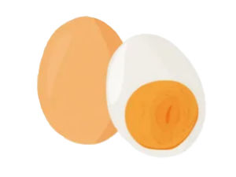

Boiled Egg Recipe

Step 1:
Place your eggs in a single layer on the bottom of your pot and cover with cold water. The water should be about an inch or so higher than the eggs.
Step 2:
Over high heat bring your eggs to a rolling boil.
Step 3:
Remove pot from heat and cover with a lid. Let stand for 3-4 minutes for a traditional soft boiled egg, which will have a set white and a warm but runny egg yolk. For a more set white, but still with runny yolk, let eggs sit for 5 minutes. For a jammy or more spreadable yolk, let eggs sit for 7-8 minutes.
Step 4:
Using a slotted spoon gently lift your eggs out of the water and let cool slightly before serving. We recommend transferring them to an ice bath for at least a few minutes, but if time is of the essence, it’s ok to skip this step and rinse them under cold water to save a few dishes.